FFF3D · result report
The fault and its slip are invented for this test and do not represent any real fault or earthquake. Only the 3-D velocity model is real: a recent Taiwan 3-D velocity model.
Waveforms at eight stations were computed for a known Mw 6.5 thrust, the reference source model, with the TIFDM finite-difference code (Zhang & Chen, 2006; Zhang et al., 2012), then inverted with FFF using strain Green’s tensors (SGTs; Zhao et al., 2006) computed in the same 3-D model. This 3-D SGT inversion is the method of Hsieh et al. (2016), built on the FFF code of Ji et al. (2002) and first applied to the 2013 Ruisui, Taiwan, earthquake; the author has set up this test of it in the Taiwan 3-D model. The inversion recovers the reference source model:
Click any figure to enlarge it; press Esc or click again to close.
Setting: Mw 6.5 thrust (strike 20°, dip 45° east, rake 90°) under the Chiayi–Tainan plain, eight stations at 12–47 km in eight azimuths, no noise.
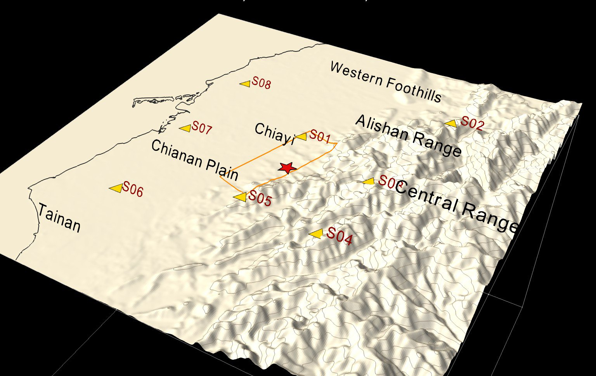
Blue makes the synthetic dataOrange inversion sideGreen checks before the production runsDashed: the reference slip is used only in the final comparison
fsub_r lays out the sub-fault grids, mult_single_3d builds Green’s functions from the SGTs by reciprocity (Zhao et al., 2006), inv_three_as_r inverts for slip, rake, rupture velocity and slip-rate shape on every sub-fault; rsac_helm convolves the data with the 2.75-s Gaussian.FD sources, reciprocity and the SGT workflow
| Test | Conclusion |
|---|---|
| Analytic solutions | FD single forces and moment sources are correct (homogeneous half-space) |
| Reciprocity | SGTs are correct; a single force at the free surface in the forward build comes out 1.45× too large (not used here) |
| Full SGT workflow | SGT/FD amplitude 1.05–1.10 on a 500 m grid, explained by the FD source smoothing |
The velocity model gives VP and VS only. Attenuation in the FD runs follows an empirical rule, not the tomography: QS = 0.1 VS (VS in m/s), reduced to 0.02 VS where VS < 1.5 km/s, which gives QS ≈ 24–30 in the slowest layers and 150–490 elsewhere. The FD code applies attenuation as one damping factor exp(−πf0Δt/QS) to all stress and velocity components at every time step (Graves, 1996), so P and S waves are damped alike (QP = QS) and the nominal Q holds at the reference frequency f0 = 1 Hz only: at a frequency f the effective Q is QS f/f0, one fifth of the nominal value at 0.2 Hz, so the medium is damped more strongly at the periods of the inversion than the numbers above suggest.
The “observations” and the SGTs are computed with the same Q, so the test is self-consistent, and reciprocity holds in a linear viscoelastic medium (the point-source recovery test below confirms it numerically). In an application to real data this Q model would enter the amplitudes, and hence the slip and moment estimates, and should be treated as a choice separate from the velocity model.
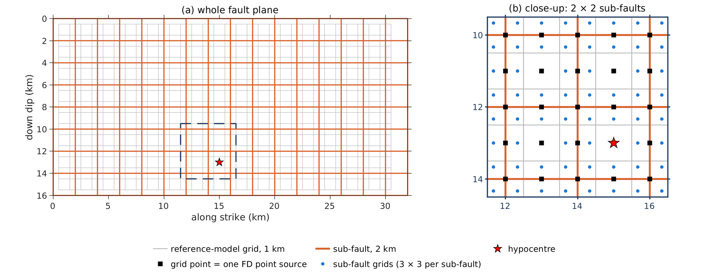
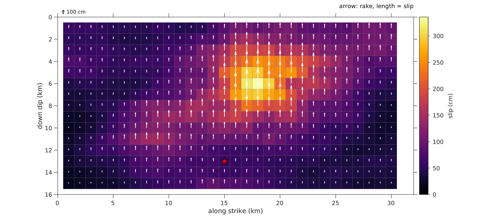
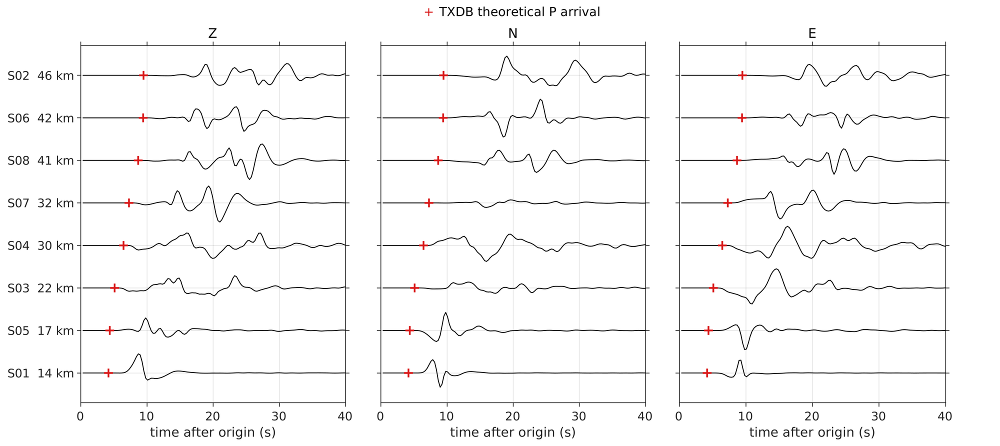
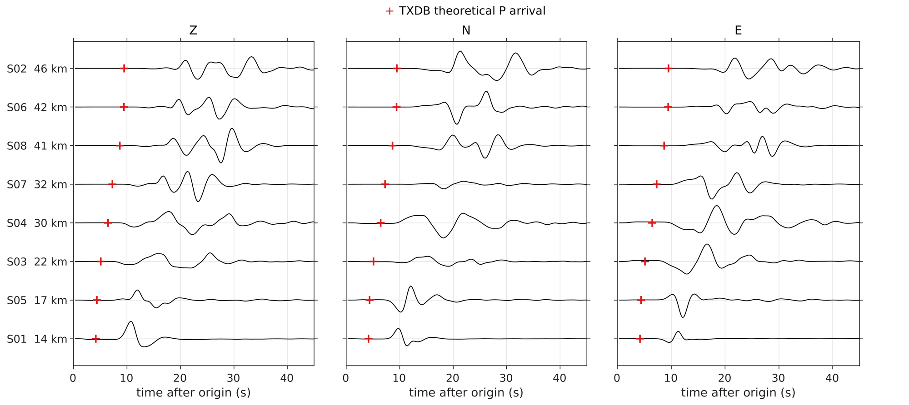
Why convolve the data with a 2.75-s Gaussian?
The two Gaussians have different roles: the 2.0-s Gaussian is the physical slip-rate function of each grid point of the reference source model; the 2.75-s Gaussian is a processing filter shared by the data and the Green’s functions.
One point source is placed at an SGT storage grid point. Its waveforms are computed twice: directly with TIFDM (black) and by reciprocity from the SGTs (Zhao et al., 2006), the way FFF builds Green’s functions (red dashed). Eight stations × three components are compared.
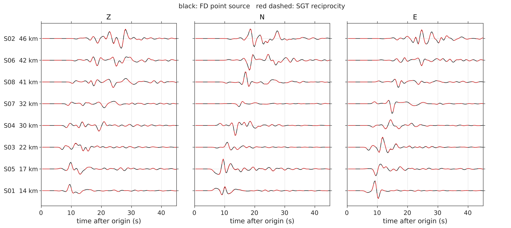
The SGT Green’s functions reproduce direct FD in timing and shape. The extra 3% in amplitude is the FD moment-source smoothing (375 m), as predicted.
Can the inversion recover the reference source model?
The main asperity is recovered in position and size; rupture times are 0.34 s late on average.
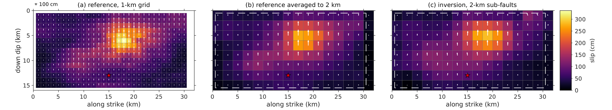
(a) The reference source model on its 1-km grid, the input of the FD forward run. (b) The same model averaged onto the 2-km sub-faults (area weights 1, ½, ½), the best the inversion can recover. (c) The inversion. One colour scale and one arrow scale for all panels: arrow = rake, length ∝ slip, 100 cm key at top left. White dashed line: extent of the reference fault (30 × 15 km). Red star: hypocentre.
The main asperity is recovered in position and size (peak 286 vs 272 cm, 2 km apart). The smaller, deeper asperity to the south is smeared into a broad band.
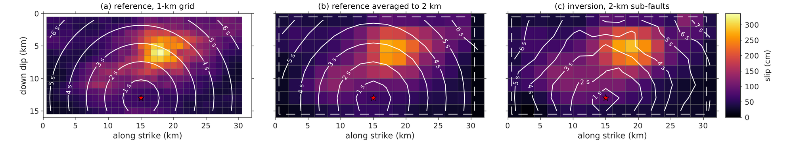
White contours: time after origin at which slip starts, every 1 s, over slip on the same panels and colour scale as above. (a) Every 1-km grid point of the reference source model starts when the rupture front reaches it: distance from the hypocentre ÷ 2.8 km/s. (b) Slip-weighted mean of the same grid points over each 2-km sub-fault. (c) The inversion: onset of the slip-rate function at the sub-fault centre, i.e. the 2.8 km/s front plus the time shift inverted for each sub-fault. Red star: hypocentre.
The inverted rupture front keeps the circular shape of the reference. The time shifts come in steps of one sample (0.28 s); 115 of 128 sub-faults are shifted by 0–0.56 s, so the inverted front runs slightly late almost everywhere (map of the difference below).
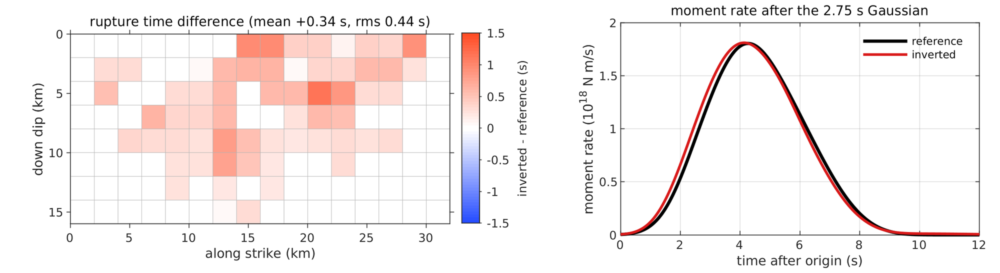
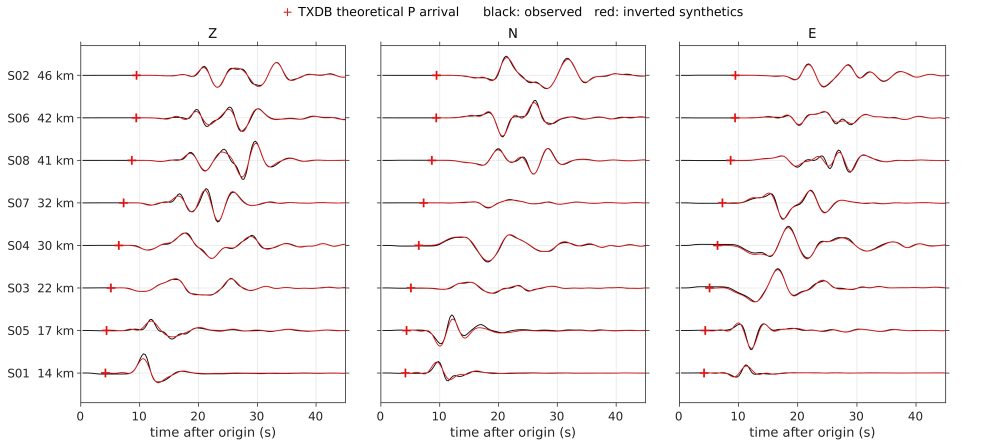
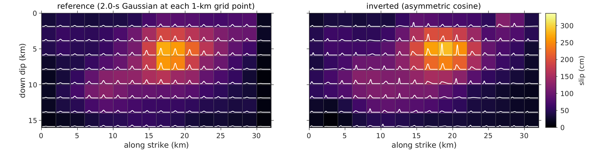
Graves, R. W. (1996). Simulating seismic wave propagation in 3D elastic media using staggered-grid finite differences. Bulletin of the Seismological Society of America, 86(4), 1091–1106. https://doi.org/10.1785/BSSA0860041091
Hsieh, M.-C., Zhao, L., Ji, C., & Ma, K.-F. (2016). Efficient inversions for earthquake slip distributions in 3D structures. Seismological Research Letters, 87(6), 1342–1354. https://doi.org/10.1785/0220160050
Ji, C., Wald, D. J., & Helmberger, D. V. (2002). Source description of the 1999 Hector Mine, California, earthquake, part I: Wavelet domain inversion theory and resolution analysis. Bulletin of the Seismological Society of America, 92(4), 1192–1207. https://doi.org/10.1785/0120000916
Vidale, J. (1988). Finite-difference calculation of travel times. Bulletin of the Seismological Society of America, 78(6), 2062–2076.
Vidale, J. E. (1990). Finite-difference calculation of traveltimes in three dimensions. Geophysics, 55(5), 521–526. https://doi.org/10.1190/1.1442863
Zhang, W., & Chen, X. (2006). Traction image method for irregular free surface boundaries in finite difference seismic wave simulation. Geophysical Journal International, 167(1), 337–353. https://doi.org/10.1111/j.1365-246X.2006.03113.x
Zhang, W., Zhang, Z., & Chen, X. (2012). Three-dimensional elastic wave numerical modelling in the presence of surface topography by a collocated-grid finite-difference method on curvilinear grids. Geophysical Journal International, 190(1), 358–378. https://doi.org/10.1111/j.1365-246X.2012.05472.x
Zhao, L., Chen, P., & Jordan, T. H. (2006). Strain Green’s tensors, reciprocity, and their applications to seismic source and structure studies. Bulletin of the Seismological Society of America, 96(5), 1753–1763. https://doi.org/10.1785/0120050253
Detailed settings
| Directory | Stage | Main programs |
|---|---|---|
01_model_250m | Velocity model | build_model.sh, make_vmap.m; TIFDM seis3d_grid, seis3d_media, seis3d_metric |
02_fault_sta | Reference source model, stations | make_subf, slip generator (Python) |
03_forward | FD forward run | make_case_250m.sh; TIFDM seis3d_wave_mpi |
04_sgt_250m | SGTs, point-source recovery test | gen_sgt_jobs.pl, run_all.sh, chk_sgt.sh, calib/run_calib.sh |
05_txdb | Travel times | write_vp_out.py; PUNCH punch_bat_volume.pl |
06_data | Data | vel2sac.sh; FFF batch_get_inp.pl |
07_inversion | Inversion | FFF fsub_r, mult_single_3d, inv_three_as_r |
08_plots | Comparison and figures | compare_slip.py, plot_figs.m, plot_web_figs.m, plot_recsec.m, anim_slip.m |
09_anim | Velocity-model animation | make_vtk_fff.py, pv_anim_fff.py (ParaView), render_slurm.sh |
12_homog_test | Analytic, reciprocity and shallow-source tests | analytic.py, compare_shallow.py |
13_artifact | This page | index.html |
| Item | Setting |
|---|---|
| Grid | 480 × 480 × 161 grid points, 250 m, terrain-following; 6 × 8 × 1 domains (48 cores); 24 absorbing-layer grid points |
| Media | Taiwan 3-D model, 2-km volume; VS ≥ 1.2 km/s, VP ≥ √2 VS, ρ = 0.33 VP + 1200, QS = 0.1 VS |
| Topography | ASTER GDEM2 30 m averaged to 0.0025°, sea set to 0, smoothed |
| Time | stability limit 0.0233 s → dt 0.0175 s; output every 16 steps (0.28 s); 4000 steps (70 s) |
| Forward run | TIFDM forward build, source smoothing on; 450 moment sources, 2.0-s Gaussian; 1 h 27 min |
| SGTs | TIFDM SGT build; force 1020 N, 2.75-s Gaussian; storage window 65 × 89 × 43 grid points at 500 m |
| Point-source recovery | point source at an SGT storage grid point; lag 0, correlation 0.997–1.000, SGT/FD 0.99–1.07 (mean 1.03) |
| TXDB | PUNCH, 60 × 60 × 21 grid points at 2 km |
| File | Setting |
|---|---|
Event_mult.in | 16 × 8 sub-faults of 2 km; strike 20, dip 45, rake 90; dt 0.28 s, lnpt 10; 0.4 0.4 12; Vr 2.8 km/s; hypocentre sub-fault (8, 7) |
fsub_r | 1152 sub-fault grids (3 × 3 per sub-fault, spacing 0.67 km) |
| Green’s functions | mult_single_3d reads the 250 m SGTs; Niu_model = 3-D rigidity; first.syn = TXDB arrivals |
HEAT.IN | 500 -7 5 7.30e+25 90; slip smoothing 0.20 |
bound.in | slip 0–400 cm; rake 60–120°; Vr 1.5–3.5 km/s |
| Data | rsac_helm convolves with the 2.75-s Gaussian; 60-s window from the TXDB arrival; all weights 1 |
| Quantity | Reference | Inverted |
|---|---|---|
| M0 | 7.30 × 1018 N m | 7.48 × 1018 N m (1.024×) |
| Maximum slip on 2-km sub-faults | 272 cm (336 cm on the 1-km grid) | 286 cm |
| Maximum-slip sub-fault (along strike, down dip) | 17, 5 km | 19, 5 km (2 km off) |
| Slip-weighted mean rake | 90° | 90.1° |
| Comparison | Value | |
| Slip correlation (128 sub-faults) | 0.961 | |
| Moment-density correlation (128 sub-faults) | 0.948 | |
| Rupture time, inverted − reference (75 sub-faults) | mean +0.34 s, rms 0.44 s | |
| Waveforms, synthetics vs observed (24 traces) | correlation mean 0.983, min 0.931; variance reduction mean 0.961, min 0.854 | |
Slip = moment ÷ (3-D rigidity × area), area-weighted onto the 2-km sub-faults. Rupture times are compared where the reference slip exceeds 20% of its peak.
| Where | What |
|---|---|
| TIFDM builds | forward build: a single force at the free surface comes out 1.45×; SGT build is correct but writes no station waveforms |
| Comparison | slip with the 3-D rigidity; area-weighted averaging; synthetic sample 1 ↔ observed sample nTn |
| Workflow script | copy Readlp.inf before mult_single_3d; stop explicitly when a program fails |
| Slurm and NFS | poll DONE markers; animation arrays may miss frames, fill them before encoding |